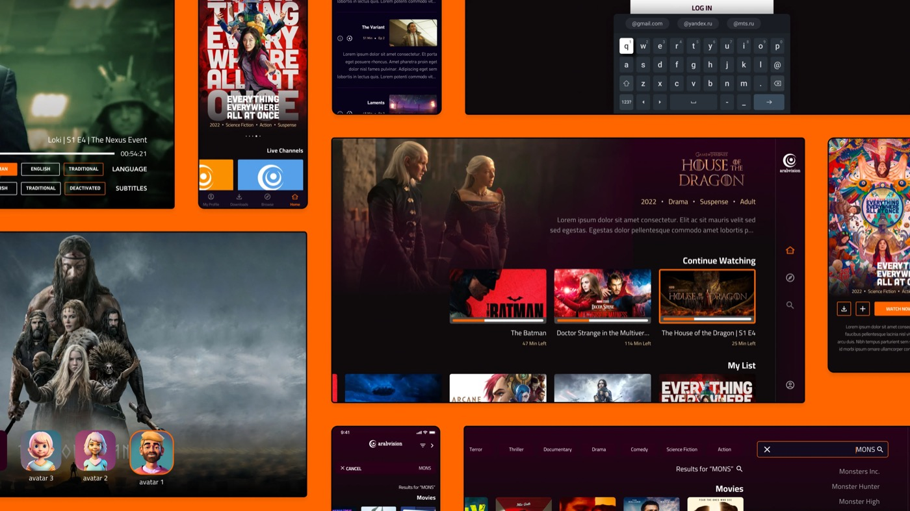
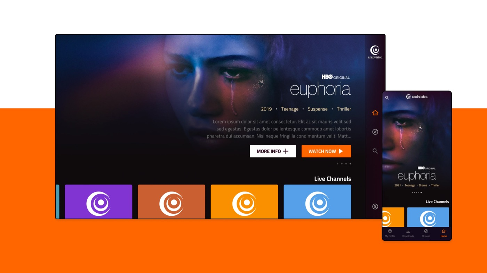
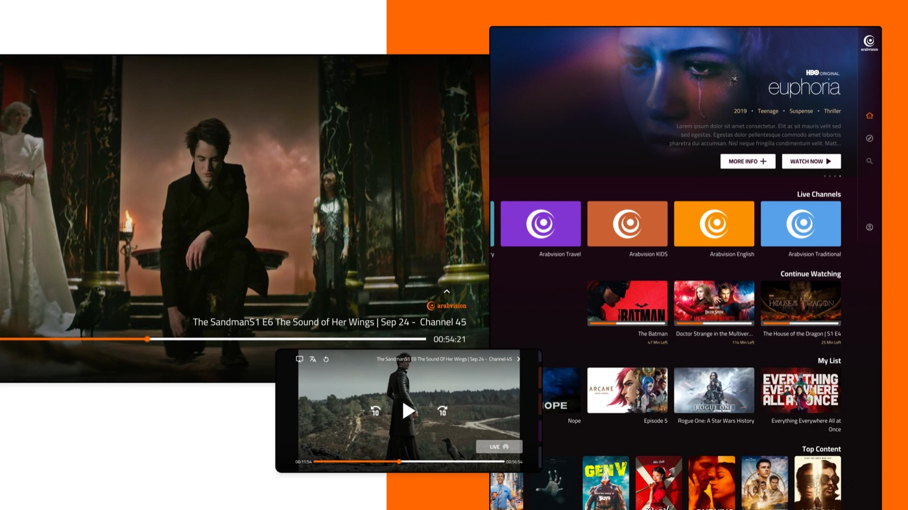

↳ Contexto
Arabvision surgió de la necesidad de adaptarse a los tiempos actuales, refinando su oferta de producto en un mercado donde el streaming bajo demanda se ha vuelto casi obligatorio para las cadenas de televisión y productoras. El objetivo era diseñar una aplicación que no solo cumpliera con las expectativas de UI, sino que también abordara la complejidad de la estructura de lectura RTL (de derecha a izquierda) del árabe. Buscábamos crear una plataforma capaz de mostrar el producto de forma atractiva y ofrecer, a la vez, una experiencia totalmente accesible.
↳ Ejecución
Analicé con detalle las preferencias de los usuarios y los matices culturales, ajustando el diseño de la aplicación a las necesidades específicas del público árabe. El desarrollo de la interfaz se integró sin fricciones con el contenido de Arabvision, garantizando una experiencia atractiva y accesible en todos los dispositivos. La supervisión continua del equipo de marca de Arabvision —con entrevistas y comprobaciones de contexto cultural— fue dando forma al diseño. Revisiones periódicas y un proceso de refinamiento colaborativo entre ambos equipos permitieron mejoras continuas basadas en ciclos de feedback dinámicos.


↳ Resultado
Aunque el proyecto se detuvo lamentablemente por el conflicto en Israel, el diseño de interfaz propuesto demostró una adaptabilidad notable y una fuerte coherencia con la marca de Arabvision. La aplicación, aunque no llegó a desarrollarse por completo, mostró un compromiso claro con una experiencia de visualización atractiva y accesible, adaptada a las preferencias actuales de streaming. La colaboración continua, las mejoras iterativas de la interfaz y unos mecanismos de feedback sólidos fueron clave para lograr un diseño fiel a la visión y al público de Arabvision.
↳ Mirándolo hoy
Mientras duró, aprendimos mucho sobre interacción RTL — cómo lee una comunidad árabe de forma sistémica — y eso obligó a replantear arquitectura e interfaz enteras desde ese punto de partida. Tuvimos sesiones colaborativas con su equipo de diseño, y hubo que manejar con cuidado a los stakeholders en plena incertidumbre sobre si el proyecto seguiría.
Qué haría distinto sabiendo cómo terminó: nada. La cancelación vino del lado del cliente, por la situación, no por algo que hiciéramos mal. Se manejó de la forma más profesional posible con la información que había entonces, y no había más margen de actuación por nuestra parte.

Este proyecto ha sido revisado para proteger información confidencial, siguiendo los términos de uso justo.
Contenido bajo NDA
Este proyecto es para un cliente y su contenido es confidencial. Introduce la contraseña para verlo.